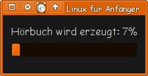

Book-To-MP3
Dieser Artikel wurde für die folgenden Ubuntu-Versionen getestet:
Ubuntu 16.04 Xenial Xerus
Zum Verständnis dieses Artikels sind folgende Seiten hilfreich:
Um sich elektronische Dokumente "vorlesen" zu lassen, stehen momentan unter Ubuntu nur wenige Möglichkeiten zur Verfügung. Insbesondere lassen sich meist nur .txt-Dateien unmittelbar in "gesprochenen Sprache" umsetzen.
Das hier vorgestellte book2mp3.sh ist ein Skript, das es ermöglicht, eine Vielzahl von Dokumenttypen einfach in .mp3-Dateien bzw .ogg-Dateien umzuwandeln. Momentan werden die Formate .pdf, .doc, .html, .htm, .rtf, .txt,.lit und auch .epub unterstützt. Die Ausgabe erfolgt in Mono (kein Stereo). Standardmäßig wird die Aufnahme in handliche Stücke aufgeteilt.
Wer aus Audio-CDs ein Hörbuch erstellen möchte, kann auf abcde zurückgreifen.
Installation¶
Hinweis:
Das Skript kann beim ersten Aufruf die fehlenden Pakete ermitteln und auf Wunsch automatische über apt-get install installieren.
Voraussetzungen¶
Zuerst müssen folgende Pakete installiert [1] werden:
lame (multiverse)
espeak
mbrola (multiverse)
mp3splt (universe, optional)
poppler-utils (für PDF-Dokumente)
catdoc (universe, für .doc- und .rtf-Dokumente)
html2text (für .html-, .htm- und .lit-Dokumente)
convlit (universe, für .lit-Dokumente)
vorbis-tools (multiverse, .ogg-Ausgabe)
zenity
 mit apturl
mit apturl
Paketliste zum Kopieren:
sudo apt-get install lame espeak mbrola mp3splt poppler-utils catdoc html2text convlit vorbis-tools zenity
sudo aptitude install lame espeak mbrola mp3splt poppler-utils catdoc html2text convlit vorbis-tools zenity
Funktionsweise¶
Das Skript ermittelt zunächst den Dateityp und wandelt dann den Inhalt in reinen Text um. Zum Einsatz kommen je nach Dateityp pdftotext, clit, html2text oder catdoc. Außerdem werden eventuell vorhandene Seitenzahlen sowie Formatierungen entfernt, um später den Textfluss nicht zu stören.
Dieser Text wird daraufhin anhand der verwendeten Artikel (the bzw der) auf die verwendete Sprache überprüft (englisch oder deutsch). Danach wird der Text mit eSpeak mit der passenden Stimme in Sprache umgesetzt. Die Ausgabe wird mittels lame oder oggenc in eine mp3- oder ogg-Datei umgewandelt, die dann mit mp3splt in handliche Längen unterteilt wird. Das Ergebnis wird im neu erstellten Unterordner Dateiname abgelegt.
Skript¶
Diese Version 1.3 wurde unter Ubuntu 16.10 Xenial Xerus getestet und kann heruntergeladen werden: book2hb_v1-3.sh  , nach dem Herunterladen ggf. in book2mp3.sh umbenennen.
, nach dem Herunterladen ggf. in book2mp3.sh umbenennen.
1 2 3 4 5 6 7 8 9 10 11 12 13 14 15 16 17 18 19 20 21 22 23 24 25 26 27 28 29 30 31 32 33 34 35 36 37 38 39 40 41 42 43 44 45 46 47 48 49 50 51 52 53 54 55 56 57 58 59 60 61 62 63 64 65 66 67 68 69 70 71 72 73 74 75 76 77 78 79 80 81 82 83 84 85 86 87 88 89 90 91 92 93 94 95 96 97 98 99 100 101 102 103 104 105 106 107 108 109 110 111 112 113 114 115 116 117 118 119 120 121 122 123 124 125 126 127 128 129 130 131 132 133 134 135 136 137 138 139 140 141 142 143 144 145 146 147 148 149 150 151 152 153 154 155 156 157 158 159 160 161 162 163 164 165 166 167 168 169 170 171 172 173 174 175 176 177 178 179 180 181 182 183 184 185 186 187 188 189 190 191 192 193 194 195 196 197 198 199 200 201 202 203 204 205 206 207 208 209 210 211 212 213 214 215 216 217 218 219 220 221 222 223 224 225 226 227 228 229 230 231 232 233 234 235 236 237 238 239 240 241 242 243 244 245 246 247 248 249 250 251 252 253 254 255 256 257 258 259 260 261 262 263 264 265 266 267 268 269 270 271 272 273 274 275 276 277 278 279 280 281 282 283 284 285 286 287 288 289 290 291 292 293 294 295 296 297 298 299 300 301 302 303 304 305 306 307 308 309 310 311 312 313 314 315 316 317 318 319 320 321 322 323 324 325 | #!/bin/bash #Version 1.3 #------------------------------------# # Umwandeln von Text in Sprache # #------------------------------------# # #Name des Buches NAMEOF="" #Graphischer- oder Konsolenmodus (-n) GRAPHIC=true TXT= MP3=true #------------------------------------# # Anzeige des Fortschrittbalkens # #------------------------------------# spanner(){ #Starten nach Beginn der Umwandlung while [ "`pidof mbrola`" = "" ]; do sleep 2.0 done #Berechnen der wahrscheinlichen Größe ANZW=$(cat spc.txt | wc -w) echo "Anzahl der Wörter (word count) : $ANZW Wörter" BEGR=$(echo "scale=5 ; $ANZW*3.5" | bc) PROC=$1;COUNT=0 DGR2=0 #Graphischer Fortschrittsbalken if [ $MP3 ]; then BEGR=$(echo "scale=5 ; $ANZW*3.36" | bc) echo "Geschätzte Größe (mp3 size) : $BEGR kB" ENDUNG="mp3" else BEGR=$(echo "scale=5 ; $ANZW*1.92" | bc) echo "Geschätzte Größe (ogg size) : $BEGR kB" ENDUNG="ogg" fi if [ $GRAPHIC ]; then ( while ([ "`pidof mbrola`" != "" ] && [ $COUNT -le 2 ]);do if [ -f "$SOURCE.$ENDUNG" ]; then DGR=$(du "$SOURCE.$ENDUNG" | cut -f 1) sleep 3 if [ $DGR2 -ge $DGR ]; then COUNT=3 else PROZ=$(echo "scale=0 ; $DGR*100/$BEGR" | bc) echo "$PROZ" echo "# Hörbuch wird erzeugt: $PROZ%" fi DGR2=$DGR else COUNT=3 fi done ) | zenity --progress --text "Hörbuch wird erzeugt"\ --title "$NAMEOF" --auto-close --no-cancel --percentage=0 #Text Fortschrittsbalken else echo -n " " while ([ "`pidof mbrola`" != "" ] && [ $COUNT -le 2 ]);do if [ -f "$SOURCE.$ENDUNG" ]; then DGR=$(du "$SOURCE.$ENDUNG" | cut -f 1) sleep 3 if [ $DGR2 -ge $DGR ]; then COUNT=3 else PROZ=$(echo "scale=0 ; $DGR*100/$BEGR" | bc) echo -n -e "\010\010\010\010\010\010\010\010\010\010\010\010\010" echo -n -e "\010\010\010\010\010\010\010\010\010\010\010\010\010" echo -n "$PROZ % " fi DGR2=$DGR else COUNT=3 fi done fi } #------------------------------------# # Überprüfen der ext. Anwendunggen # #------------------------------------# CHECK= checkdep(){ for QUELLE in $*; do if [ "`whereis $QUELLE | grep /`" = "" ]; then CHECK=true fi done } #------------------------------------# # Installiert externe Abhängigkeiten # #------------------------------------# instdep(){ checkdep "`echo $* | sed 's/mbrola-de6 mbrola-en1//g'`" if [ $CHECK ]; then PAKETE=`echo $* | sed 's/pdftotext/poppler-utils/g' | sed 's/clit/convlit/g' | sed \ 's/oggenc/vorbis-tools/g'` if [ $GRAPHIC ]; then if [ "`whereis gksudo | grep /`" != "" ]; then gksudo apt-get -y install $PAKETE | zenity --progress --pulsate \ --auto-close --no-cancel \ --text "Zusätzliche Quellen installieren:\n $PAKETE" --title "$NAMEOF" else if [ "`whereis kdesudo | grep /`" != "" ]; then kdesudo apt-get -y install $PAKETE | zenity --progress \ --pulsate --auto-close --no-cancel \ --text "Zusätzliche Quellen installieren:\n $PAKETE" --title "$NAMEOF" else zenity --warning --text "gksudo und kdesudo nicht gefunden\ Bitte ext. Quellen manuell intallieren oder \"book2mp3 -n\" (Konsole) verwenden" exit 1 fi fi else sudo apt-get install $PAKETE fi fi CHECK= checkdep "`echo $* | sed 's/mbrola-de6 mbrola-en1//g'`" if [ $CHECK ]; then if [ $GRAPHIC ]; then zenity --warning --text "Bitte ext. Quellen: $* \n manuell intallieren" else echo "Bitte ext. Quellen: $* \n manuell intallieren" fi exit 1 else #Prüfen ob mbrola Stimmen installiert sind if ( [ ! -f "/usr/share/mbrola/de6" ] \ && [ ! -f "/usr/share/mbrola/de6/de6" ] ) then if [ $GRAPHIC ]; then zenity --warning --text "/usr/share/mbrola/ Deutsche Stimmen nicht gefunden" else echo "/usr/share/mbrola/ Deutsche Stimmen nicht gefunden" fi exit 1 fi if ( [ ! -f "/usr/share/mbrola/en1" ] \ && [ ! -f "/usr/share/mbrola/en1/en1" ] ) then if [ $GRAPHIC ]; then zenity --warning --text "/usr/share/mbrola/ Englische Stimmen nicht gefunden" else echo "/usr/share/mbrola/ Englische Stimmen nicht gefunden" fi exit 1 fi fi CHECK= } #------------------------------------# # Parameter Behandlung # #------------------------------------# while getopts hntTo opt do case "$opt" in h) echo "book2mp3 -n -o -t -T <pdf, doc, html, htm, rtf, txt or lit file>";\ echo "-n nur console modus" ;echo "-t txt Datei erzeugen" ;echo "-T nur die txt Datei\ erzeugen" ;echo "-o ogg statt mp3 ausgeben erzeugen" ;exit 1;; n) GRAPHIC=;; t) TXT=true;; T) TXT="only";; o) MP3=;; \?) exit 1;; esac done shift $(($OPTIND - 1)) if [ "$1" ]; then SOURCE="$*" shift fi if [ $MP3 ]; then instdep lame espeak mbrola mp3splt mbrola-de6 mbrola-en1 else instdep oggenc espeak mbrola mp3splt mbrola-de6 mbrola-en1 fi #Hauptabhängigkeiten prüfen #------------------------------------# # Parameter Behandlung Dateiauswahl # #------------------------------------# if [ $GRAPHIC ]; then if [ "$SOURCE" = "" ]; then if ! NAME=$(zenity --file-selection --file-filter="Buecher | *.pdf *.doc *.html \ *.htm *.rtf *.txt *.lit *.epub" --text "Bitte geben Sie den Dateipfad des Buches\ ein:" --title "Bitte eBook auswählen"); then exit fi SOURCE="$NAME" fi else if [ "$SOURCE" = "" ]; then exit 1 fi fi #------------------------------------# # spez. Buchtyp in Text umwandeln # #------------------------------------# ENDOFF=${SOURCE##*.} DIROF=$(dirname "$SOURCE") if [ "$DIROF" = "." ];then DIROF="`pwd`" fi NAMEOF=$( basename "$SOURCE" | sed 's/\.[^\.]\{1,\}$//g' ) echo -e "\033\01330;34m------------------------------------------------------------\033\01330m" SOURCE="`echo "$DIROF/$NAMEOF.$ENDOFF"`" if [ -f "$SOURCE" ]; then cd "$DIROF" mkdir tmp cd tmp ENDOFFLOW=$( echo $ENDOFF | tr "'[:upper:]'" "'[:lower:]'" ) echo "Dateityp: $ENDOFFLOW umwandeln." else echo keine Datei exit 1 fi echo -e "\033\01330;34m------------------------------------------------------------\033\01330m" case $ENDOFFLOW in pdf) instdep pdftotext;pdftotext "$SOURCE" sp.txt;; lit) instdep clit;clit "$SOURCE" .;html2text -utf8 *.htm* > sp.txt;; txt) cp "$SOURCE" sp.txt;; htm) instdep ;html2text -utf8 "$SOURCE" > sp.txt;; html) instdep ;html2text -utf8 "$SOURCE" > sp.txt;; rtf) instdep catdoc;catdoc "$SOURCE" > sp.txt;; doc) instdep catdoc;catdoc "$SOURCE" > sp.txt;; epub) instdep unzip;unzip -qq -j "$SOURCE";html2text -utf8 *.htm* > sp.txt;; \?) echo "Dateityp $ENDOFFLOW unbekannt. Beende Verarbeitung.";exit 1;; esac #-------------------------------------------# # Formatierung und Filter von Rückständen # #-------------------------------------------# echo "Löschen der Seitennummern und Formatierung des Textes" echo -e "\033\01330;34m------------------------------------------------------------\033\01330m" # löschen von Seitennummern sed -e 's/^[ »«\.,":\!\?+-0123456789]*$|^[ »«\.,":\!\?+-0123456789]*[Ss]eite[ »«\.,":\!\?+-0123456789]*$|^[ »«\.,":\!\?+-0123456789]*[Pp]age[ »«\.,":\!\?+-0123456789]*$//g' sp.txt > spc.txt sed -e 's/[^ A-Za-z0-9!@&\(\)\\\/\.\,\<\>\?+=-]//g' spc.txt > sp.txt #reste von xml entfernen sed -e 's/<?.*?>//g' sp.txt > spc.txt sed -e 's/<?.*$//g' spc.txt > sp.txt sed -e 's/^.*?>//g' sp.txt > spc.txt #url entfernen sed -e 's/\(http\|https\|ftp\)\{0,1\}:\{0,1\}\(\/\)\{0,2\}\(www\)\{0,1\}\.\{0,1\}[A-Za-z0-9!@&\.\?+=-]\{1,\}\.\(HTM\|HTML\|htm\|html\|com\|org\|net\|mil\|edu\|COM\|ORG\|NET\|MIL\|EDU\|de\|DE\|org\|ORG\)\{1,1\}[A-Za-z0-9!@&\(\)\\\/\.\,\<\>\?+=-]\{0,\}//g' spc.txt > sp.txt #zeilen mit zahlen entfernen sed -e 's/^[ 0-9!@&\(\)\\\/\.\,\<\>\?+=-]\{0,\}$//g' sp.txt > spc.txt #cat sp1.txt | tr -c '[:alnum:].,!?äöüÄÖÜß\n' ' ' > spc.txt #exit #------------------------------------# # ermitteln der Sprache des Buches # #------------------------------------# if [ $TXT ]; then cp spc.txt "$SOURCE.txt" if [ $TXT = "only" ]; then cd .. rm tmp/* rmdir tmp exit 1 fi fi ENTXT=$(cat spc.txt | grep -c " the ") DETXT=$(cat spc.txt | grep -c " der ") echo "Artikelzahl (article count): en $ENTXT : de $DETXT" echo -e "\033\01330;34m------------------------------------------------------------\033\01330m" spanner & #------------------------------------# # Umwandlung: Text in Sprache # #------------------------------------# if [ $ENTXT -le $DETXT ]; then if [ $MP3 ]; then espeak -p 42 -s 150 -v mb-de6 -f spc.txt --stdout | lame --tt "$NAMEOF"\ --ta Hoerbuch -b 16 -h -V2 - "$SOURCE.mp3" else espeak -p 42 -s 150 -v mb-de6 -f spc.txt --stdout | oggenc -t "$NAMEOF"\ -a Hoerbuch -q 3 -o "$SOURCE.ogg" - fi else if [ $MP3 ]; then espeak -p 42 -s 130 -v mb-en1 -f spc.txt --stdout | lame --tt "$NAMEOF"\ --ta Audiobook -b 16 -h -V2 - "$SOURCE.mp3" else espeak -p 42 -s 150 -v mb-de6 -f spc.txt --stdout | oggenc -t "$NAMEOF"\ -a Hoerbuch -q 3 -o "$SOURCE.ogg" - fi fi cd .. rm tmp/* rmdir tmp #------------------------------------# # Aufteilen der MP3/OGG-Datei # #------------------------------------# echo -e "\033\01330;34m------------------------------------------------------------\033\01330m" BNR=$( echo "$SOURCE" | sed 's/[^0123456789]*//g' ) echo "Starten des audio-Splittens" if [ $GRAPHIC ]; then if ! zenity --question --text "Hörbuch in 15 min Teile\naufsplitten?"; then exit; else if [ $MP3 ]; then mp3splt -q -O 0.4 -t 15.0 -d "$NAMEOF" -o track_"$(date +%s)_$BNR"_@N \ "$SOURCE.mp3" | zenity --progress --pulsate --auto-close --no-cancel \ --text "Hörbuch splitten ..." --title "$NAMEOF" rm "$SOURCE.mp3" else oggsplt -q -O 0.4 -t 15.0 -d "$NAMEOF" -o track_"$(date +%s)_$BNR"_@N \ "$SOURCE.ogg" | zenity --progress --pulsate --auto-close --no-cancel \ --text "Hörbuch splitten ..." --title "$NAMEOF" rm "$SOURCE.ogg" fi fi else # nachfolgende Zeilen auskommentieren falls nur eine große mp3-Datei erwünscht ist if [ $MP3 ]; then mp3splt -q -O 0.4 -t 15.0 -d "$NAMEOF" -o track_"$(date +%s)_$BNR"_@N "$SOURCE.mp3" # auskommentieren falls auch eine große mp3-Datei erwünscht ist rm "$SOURCE.mp3" else oggsplt -q -O 0.4 -t 15.0 -d "$NAMEOF" -o track_"$(date +%s)_$BNR"_@N "$SOURCE.ogg" # auskommentieren falls auch eine große mp3-Datei erwünscht ist rm "$SOURCE.ogg" fi fi echo -e "\033\01330;34m------------------------------------------------------------\033\01330m" echo Fertig. exit 0 |
Benutzung¶
Um das Skript systemweit nutzen zu können, ohne jeweils den Pfad dazu einsetzen zu müssen, empfiehlt es sich, es mit Root-Rechten [4] nach /usr/local/bin/ zu kopieren und die Rechte [5] zum Ausführen korrekt zu setzen. Die Endung .sh kann dabei auch entfernt werden.
 Der Aufruf erfolgt dann im Terminal [6] über
book2mp3.sh [OPTIONEN] [Datei.pdf, -.doc, -.html, -.htm, -.rtf, -.txt, -.lit, -.epub]
Ohne Option oder Dateiangabe öffnet sich ein Auswahldialog/Dateibrowserfenster, in dem alle Dateien der unterstützten Formate angezeigt werden, dort kann die gewünschte Datei ausgewählt werden. Sie wird dann direkt umgewandelt, auf Wunsch kann die Ausgabedatei gleich auch auf 15-min-Teile aufgesplittet werden. Verwendbare Optionen sind
Parameter
-ofür ogg-Vorbis-ausgabe (statt mp3)Parameter
-terstellt zusätzlich eine Text-Version des Buches und-Terstellt ausschließlich das TextdokumentParameter
-nKommandozeilen-Modus
Beispiel:
book2mp3.sh "/home/niemand/Homer - Odyssee.pdf"
Anpassungen¶
Um die Länge der gesplitteten mp3-Dateien festzulegen, kann in einem Editor[7] in den Zeilen
mp3splt -q -O 0.4 -t 15.0 -d "$NAMEOF" -o track_"$(date +%s)_$BNR"_@N "$SOURCE.mp3"
der Wert -t angepasst werden, die erste Zahl steht für die Minuten, die zweite für die Sekunden. -t 5.30 würde also eine 5 1/2 Minuten lange .mp3-Dateien erzeugen.
Andere Stimmen verwenden¶
Grunsätzlich lassen sich alle Stimme einsetzen, die auch unter eSpeak verwendbar sind, also auch weitere mbrola-Stimmen  . Dazu müssen in den eSpeak-Kommado-Zeilen (neue Version)
. Dazu müssen in den eSpeak-Kommado-Zeilen (neue Version)
espeak -p 42 -s 150 -v mb-de6 -f spc.txt --stdout | lame --tt "$NAMEOF" --ta Hoerbuch -b 16 -h -V2 - "$SOURCE.mp3"
bzw.
espeak -p 42 -s 130 -v mb-en1 -f spc.txt --stdout | lame --tt "$NAMEOF" --ta Audiobook -b 16 -h -V2 - "$SOURCE.mp3"
hinter der Option -v die entsprechenden Namen angegeben werden.
Weitere eSpeak-Parameter verwenden¶
Die Stimmen lassen sich durch Veränderung der verwendeten bzw. Einsatz weiterer eSpeak-Optionen auch an die eigenen Bedürfnisse anpassen, so z.B. in der Geschwindigkeit, der Tonhöhe, Lautstärke oder Pausenlänge zwischen den Wörtern. Dazu müssen in den angegebene Zeilen die Optionen verändert bzw. ergänzt werden.
Direkte Sprachausgabe¶
Um Textdateien oder Text direkt wiederzugeben kann das hier folgende kleine Skript verwendet werden.
Beispiel:
./sayit.sh "Hallo Welt"
oder
./sayit.sh "hallo_welt.txt
Auch dieses Skript kann wie oben beschrieben nach /usr/local/bin/ kopiert werden.
Das fertige Skript sayit.sh kann auch heruntergeladen werden.
1 2 3 4 5 6 7 8 9 10 11 12 13 14 15 16 17 18 19 20 21 22 23 24 25 26 | #!/bin/bash #clear #------------------------------------# # Umwandeln von Text in Sprache # #------------------------------------# #------------------------------------# if [ -f "$1" ] then TEXT="$( cat $* )" else TEXT="$*" fi if [ "$( pidof espeak )" != "" ] then echo "Zu viele Instanzen" else ENTXT=$(echo "$TEXT" | grep -c " the ") DETXT=$(echo "$TEXT" | grep -c " der ") if [ $ENTXT -le $DETXT ]; then TEXT=$( echo $TEXT | sed 's/-/ minus /g' | sed 's/\// släsch /g' | sed 's/:/ Doppelpunkt /g' | sed 's/[<>]/ /g' ) espeak -p 38 -s 150 -v mb-de6 "$TEXT" 2> /dev/null else TEXT=$( echo $TEXT | sed 's/-/ minus /g' | sed 's/\// slash /g' | sed 's/:/ double dot /g' | sed 's/[<>]/ /g' ) espeak -p 38 -s 130 -v mb-en1 "$TEXT" 2> /dev/null fi fi |
Alternativen¶
Sprachausgabe
 Übersichtsseite
Übersichtsseiteabtool - Weiterentwicklung mit weiteren Möglichkeiten
Gespeaker - die Stimmen sind einfacher zu konfigurieren, kann allerdings nur .txt in .wav umwandeln
Skripte/pdf2mp3 - Python-Skript, das PDF- und ASCII-Vorlagen in .mp3- oder .wav-Dateien umwandelt.
KMouth - KDE-Programm zur Stimmausgabe
PlayItSlowly kann zur Wiedergabe der mp3-Dateien verwendet werden, um dort auch während der Laufzeit Anpassungen an Tonhöhe und Geschwindigkeit vorzunehmen
- Erstellt mit Inyoka
-
 2004 – 2017 ubuntuusers.de • Einige Rechte vorbehalten
2004 – 2017 ubuntuusers.de • Einige Rechte vorbehalten
Lizenz • Kontakt • Datenschutz • Impressum • Serverstatus -
Serverhousing gespendet von